See how your codebase really fits together, and prove it.
Wirehouse maps a repository from its code and turns it into a 3D warehouse you can walk. Services are shipping containers, databases are silos, auth is a security gate, and every pipe is a connection found in the code, with the file and line that prove it.
pip install "git+https://github.com/creyes-git/wirehouse" && wirehouse install
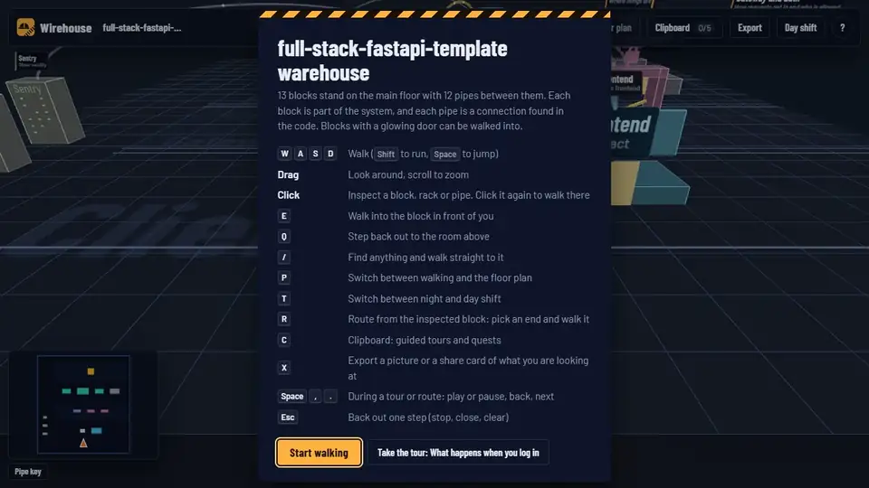
The warehouse of fastapi/full-stack-fastapi-template, described by a coding agent. The demo is one 1.2 MB HTML file.
Why Wirehouse
Nothing is drawn that the code does not show
Architecture diagrams go stale the day they are drawn, and reading a codebase file by file tells you what is there but not how it fits together. Wirehouse rebuilds the map from the code every time.
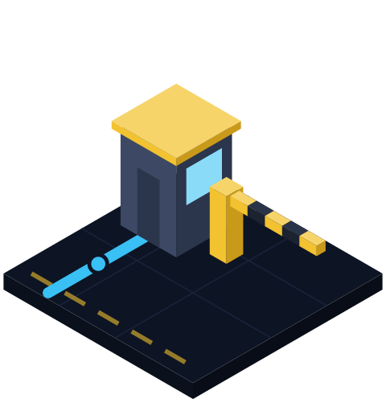
A map you can check
Every connection found in the code carries its file and line, linked to your code host at the scanned commit. What an agent adds must cite real code or it is left out, and inferred links say so.
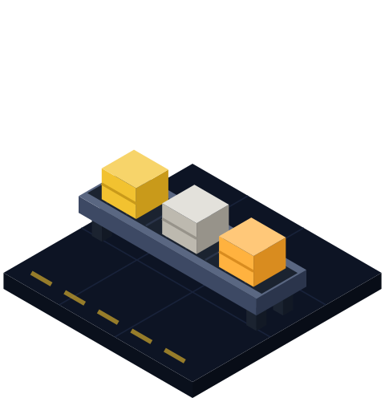
Current in seconds
Re-run it after a change; only code that changed is described again. --against shows exactly which
blocks, connections and files a change touched.
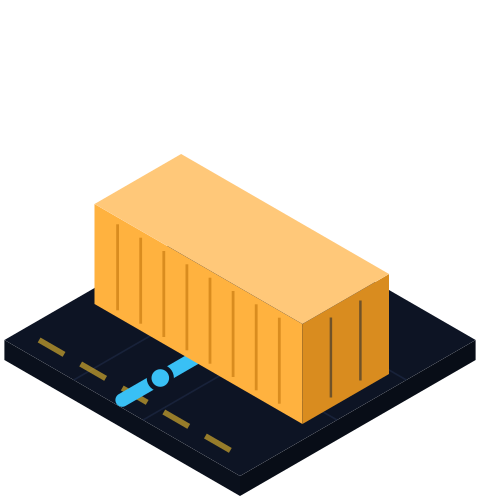
One file, nothing to host
A single offline HTML file with everything inlined: no server, no account, no telemetry. Email it, attach it to a pull request, or publish it on GitHub Pages.
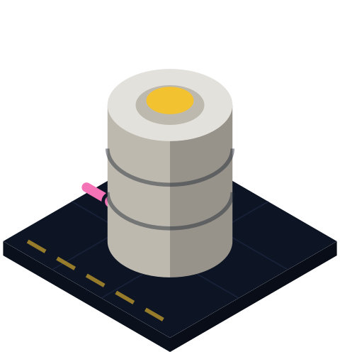
Answers real questions
What does this service reach? Trace it, with hop counts. How does a request reach the database? Walk the route. Where do I start? Take the tour, then go find things with quests.
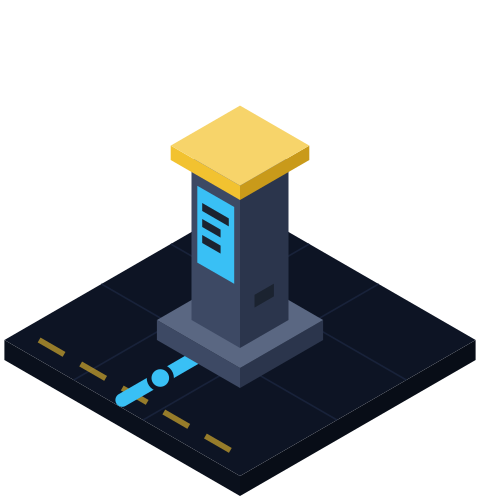
Your agent, or no agent
The skill uses the open SKILL.md format and works with Claude Code, Codex, Cursor, OpenCode, Gemini CLI, GitHub Copilot and any agent that reads files. Without one, the CLI still draws the whole map.
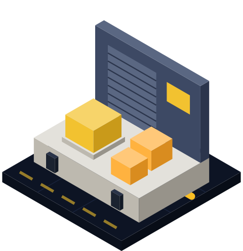
Safe to share
Real .env files are never read, credential-looking text is cut from every output, and --share removes
local paths. Scanning a repository you did not write never runs its commands.
One map, two readers
Text for your agent, a place to walk for you
wirehouse export writes the same map as Markdown with a Mermaid diagram and a table of every connection
with its file and line: ready for a README, a pull request or an agent's context.
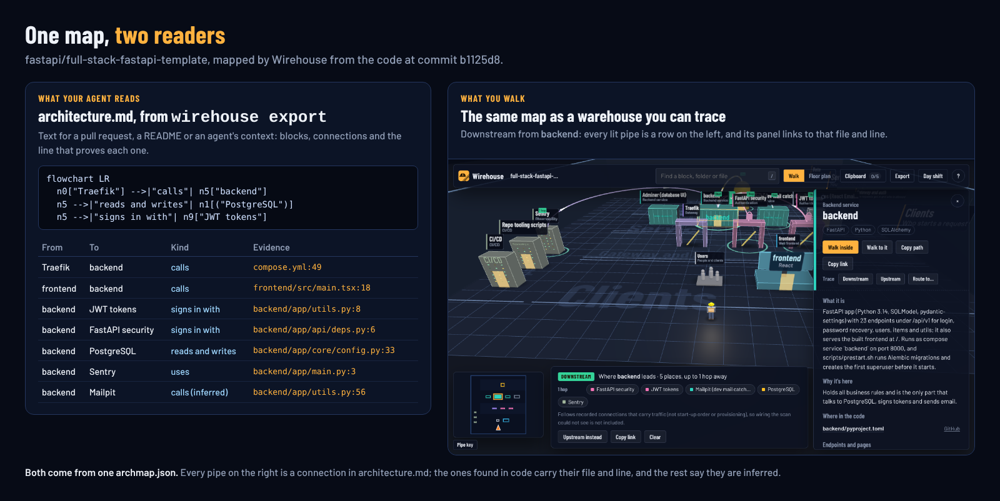
How it works
Three steps, all on your machine
- ScanThe CLI reads imports, env vars, URLs, endpoints, tables, compose, Terraform, Kubernetes and CI, and maps about 115 technologies to blocks.
- DescribeYour agent reads the code and writes descriptions, tours and quests. Every citation is checked against the scan.
- WalkOne HTML file opens in any browser: trace, route, tour, open the schema, or switch to the floor plan.
What you can do
Explore, explain, review
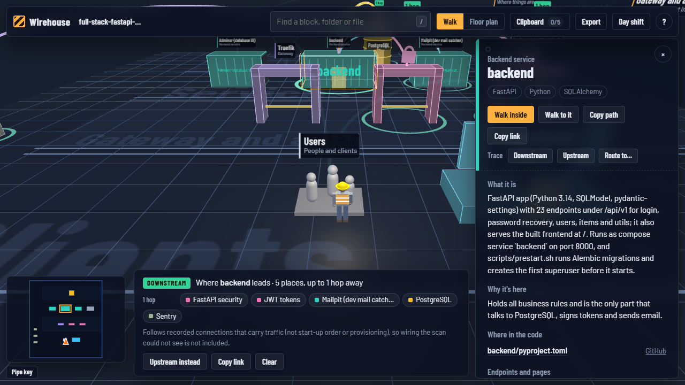
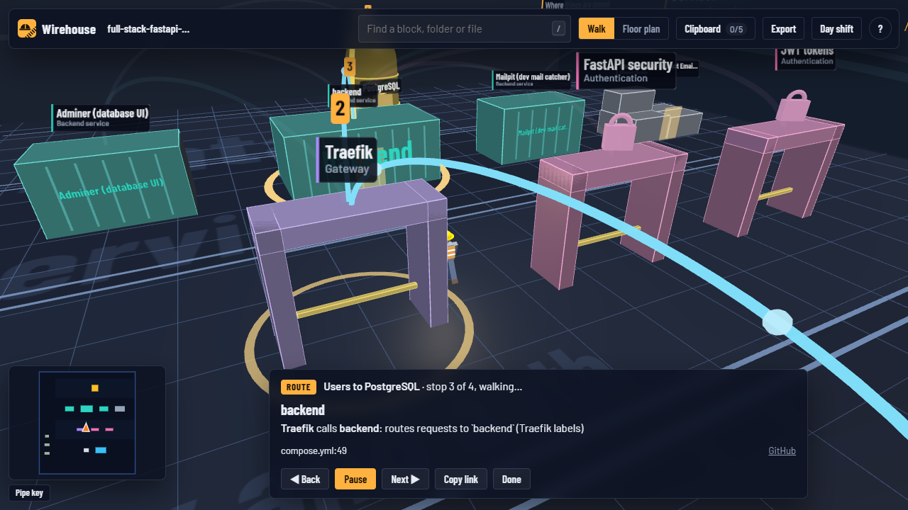
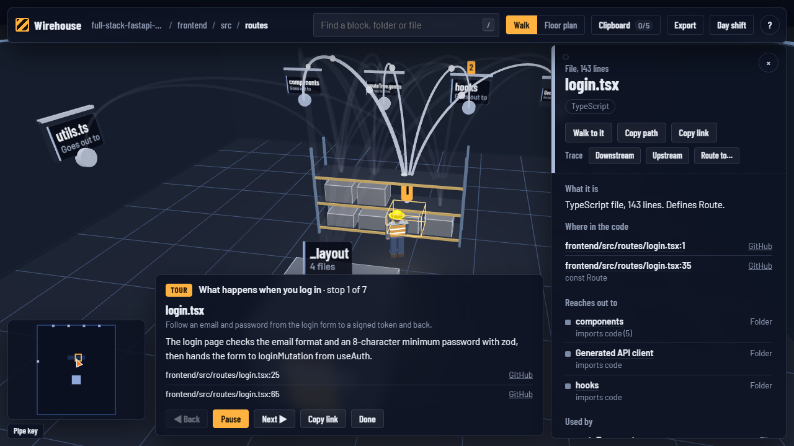
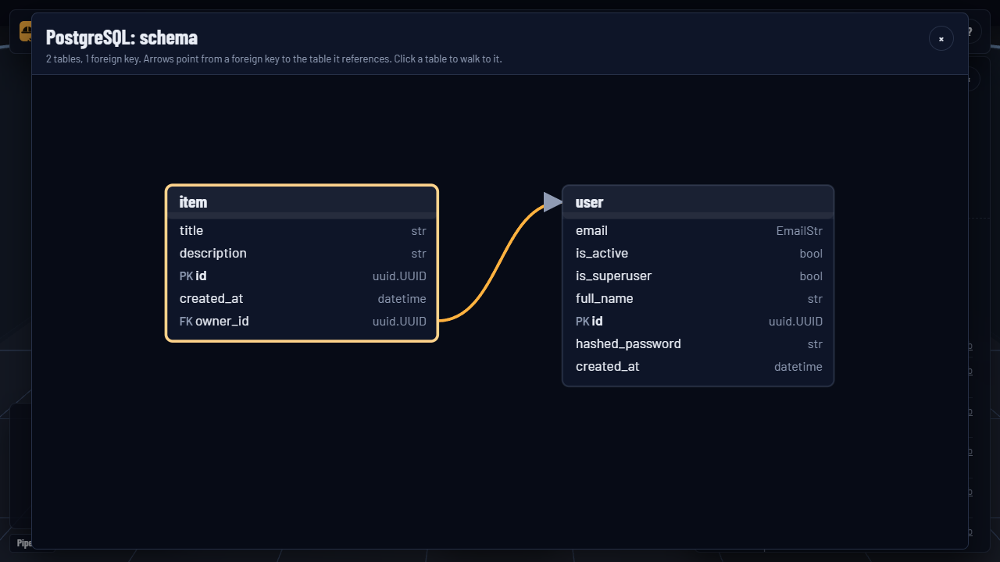
Walk your own codebase
Python 3.11+. Then ask your agent for /wirehouse, or run wirehouse build . --open.